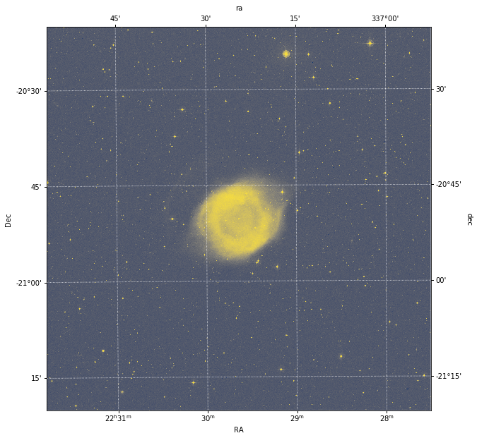
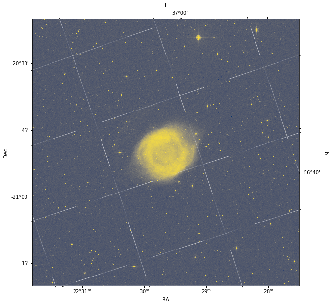
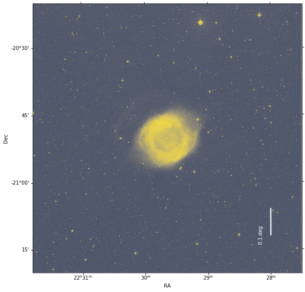

Kris Stern, Kelle Cruz, Lia Corrales, David Shupe, Adrian Price-Whelan
Demonstrate two ways to build a astropy.wcs.WCS object
Show an image of the Helix nebula with RA and Dec labeled
Plot a scale bar on an image with WCS information
WCS, coordinates, matplotlib
“An Introduction to Modern Astrophysics” (Carroll & Ostlie)
This tutorial series aims to show how the content of Chapter 1 of “An
Introduction to Modern Astrophysics” by Carroll and Ostlie can be
applied to real life astrophysics research situations, using tools in
the Astropy ecosystem. We will introduce two different approaches to
building a astropy.wcs.WCS object, which contains meta-data that (in
this case) defines a mapping between image coordinates and sky
coordinates. The astropy.wcs subpackage conforms to the standards of
the FITS World Coordinate System (WCS) used extensively by the astronomy
research community. We will created a 2D WCS for an image of the iconic
the Helix nebula (a planetary nebula) and display an image of the nebula
with sky coordinates (here, equatorial, ICRS RA and Dec.) labeled.
Finally, we will over-plot a scale bar on the Helix nebula image using
WCS to give the reader a sense of the angular size of the image.
In[1]:
from astropy.wcs import WCS
from astropy.io import fits
import matplotlib.pyplot as plt
astropy.wcs.WCS object¶World coordinates serve to locate a measurement in some multi-dimensional parameter space. A World Coordinate System (WCS) specifies the physical, or world, coordinates to be attached to each pixel or voxel of an N-dimensional image or array. An elaborate set of standards and conventions have been developed for the Flexible Image Transport System (FITS) format (Wells et al. 1981). A typical WCS example is to specify the Right Ascension (RA) and Declination (Dec) on the sky associated with a given the pixel or spaxel location in a 2-dimensional celestial image (Greisen & Calabretta 2002; Calabretta and Greisen 2002).
The `astropy.wcs
subpackage <https://docs.astropy.org/en/stable/wcs/>`__ implements FITS
standards and conventions for World Coordinate Systems. Using the
astropy.wcs.WCS object and matplotlib, we can generate images of
the sky that have axes labeled with coordinates such as right ascension
(RA) and declination (Dec). This requires selecting the proper
projections for matplotlib and providing an
astropy.visualization.WCSAxes object.
There are two main ways to initialize a WCS object: with a Python
dictionary (or dictionary-like object, like a FITS file header) or with
Python lists. In this set of examples, we will initialize an
astropy.wcs.WCS object with two dimensions, as would be needed to
represent an image.
The WCS standard defines a set of keywords that are used to represent the world coordinate system for a given set of data (e.g., image). Here is a list of the essential WCS keywords and their uses; In each case, the integer \(n\) denotes the dimensional axis (starting with 1) to which the keyword is being applied. In our examples below, we will have two image dimensions (axes), so \(n\) will either be 1 or 2.
CRVALn: the coordinate value at a reference point (e.g., RA and DEC value in degrees)
CRPIXn: the pixel location of the reference point (e.g., CRPIX1=1, CRPIX2=1 describes the center of a corner pixel)
CDELTn: the coordinate increment at the reference point (e.g., the difference in ‘RA’ value from the reference pixel to its neighbor along the RA axis)
CTYPEn: an 8-character string describing the axis type (e.g., ‘RA—TAN’ and ‘DEC—TAN’ describe the typical tangent-plane sky projection that astronomers use)
CUNITn: a string describing the unit for each axis (if not specified, the default unit is degrees.)
NAXISn: an integer defining the number of pixels in each axis
Some good references of the WCS standard can be found here.
One way to define an Astropy WCS object is to construct a dictionary
containing all of the essential information (i.e., specifying values for
the WCS keywords listed above) that map the pixel coordinate space to
the world coordinate space.
In this example, we define two coordinate axes with: * A Gnomonic (tangent-plane) projection, which corresponds to the RA/Dec coordinate system * A reference location of (RA,DEC) = (337.52, -20.83), as defined by the CRVALn keys * The pixel at coordinate value (1,1) as the reference location (CRPIXn keys) * Units of degrees (CUNITn = ‘deg’) * Pixel sizes of 1 x 1 arcsec (CDELTn = 0.002778 in degrees) * An image size of 1024 x 1024 pixels (NAXISn key)
In[2]:
wcs_input_dict = {
'CTYPE1': 'RA---TAN',
'CUNIT1': 'deg',
'CDELT1': -0.0002777777778,
'CRPIX1': 1,
'CRVAL1': 337.5202808,
'NAXIS1': 1024,
'CTYPE2': 'DEC--TAN',
'CUNIT2': 'deg',
'CDELT2': 0.0002777777778,
'CRPIX2': 1,
'CRVAL2': -20.833333059999998,
'NAXIS2': 1024
}
wcs_helix_dict = WCS(wcs_input_dict)
Now let’s print the WCS object defined with a Python dictionary to
check its content:
In[3]:
wcs_helix_dict # To check output
Out[3]:
WCS Keywords
Number of WCS axes: 2
CTYPE : 'RA---TAN' 'DEC--TAN'
CRVAL : 337.5202808 -20.83333306
CRPIX : 1.0 1.0
PC1_1 PC1_2 : 1.0 0.0
PC2_1 PC2_2 : 0.0 1.0
CDELT : -0.0002777777778 0.0002777777778
NAXIS : 1024 1024
In this demonstration (and below), we assume that we know all of the relevant WCS keyword values to specify. Typically, however, we will rely on software to produce these values for us. For example, WCS information is most often included automatically in FITS files produced by software used to take images with most instruments at astronomical observatories. In cases when the WCS information is provided for us in a FITS file, it is typically included in a FITS header, which, when read into Python, acts like a dictionary object. We demonstrate this later on in this tutorial.
Alternatively, we could initialize the astropy.wcs.WCS object, and
assign the keyword values with lists corresponding to each respective
axis.
In[4]:
wcs_helix_list = WCS(naxis=2)
wcs_helix_list.wcs.crpix = [1, 1]
wcs_helix_list.wcs.crval = [337.5202808, -20.833333059999998]
wcs_helix_list.wcs.cunit = ["deg", "deg"]
wcs_helix_list.wcs.ctype = ["RA---TAN", "DEC--TAN"]
wcs_helix_list.wcs.cdelt = [-0.0002777777778, 0.0002777777778]
Let’s print the WCS object one more time to check how our values
were assigned.
In[5]:
wcs_helix_list # To check output
Out[5]:
WCS Keywords
Number of WCS axes: 2
CTYPE : 'RA---TAN' 'DEC--TAN'
CRVAL : 337.5202808 -20.833333059999998
CRPIX : 1.0 1.0
PC1_1 PC1_2 : 1.0 0.0
PC2_1 PC2_2 : 0.0 1.0
CDELT : -0.0002777777778 0.0002777777778
NAXIS : 0 0
Note that when we initialize the WCS object this way, the NAXIS
values are set to 0. To assign coordinates to our image, we will need to
fix the shape of the WCS object array so that it matches our image.
We can do this by assigning a value to the array_shape attribute of
the WCS object:
In[6]:
wcs_helix_list.array_shape = [1024, 1024]
Now when we print the WCS object, we can see that the NAXIS
values have been updated from the default size of 0 to 1024.
In[7]:
wcs_helix_list
Out[7]:
WCS Keywords
Number of WCS axes: 2
CTYPE : 'RA---TAN' 'DEC--TAN'
CRVAL : 337.5202808 -20.833333059999998
CRPIX : 1.0 1.0
PC1_1 PC1_2 : 1.0 0.0
PC2_1 PC2_2 : 0.0 1.0
CDELT : -0.0002777777778 0.0002777777778
NAXIS : 1024 1024
Most of the time we can obtain the required astropy.wcs.WCS object
from the header of the FITS file from a telescope or astronomical
database. This process is described below.
We will read the FITS file containing an image of the Helix nebula from
the astropy-data GitHub repository using the astropy.io.fits
subpackage. The astropy.io.fits.open() function will load the
contents of a FITS file into Python, and it accepts either a local file
path or a URL (as is demonstrated here). This image (FITS file) was
originally accessed from the Digitized Sky
Survey but is provided in the
astropy-data repository for convenience:
In[8]:
header_data_unit_list = fits.open('https://github.com/astropy/astropy-data/raw/6d92878d18e970ce6497b70a9253f65c925978bf/tutorials/celestial-coords1/tailored_dss.22.29.38.50-20.50.13_60arcmin.fits')
FITS files are a binary file format that is mainly used by astronomers and can contain information arranged in many “extensions,” which contain both header information (e.g., metadata) and data (e.g., image data). We can check how many extensions there are in a FITS file, as well as view a summary of the contents in each extension, by printing the FITS object information.
In[9]:
header_data_unit_list.info()
Out[9]:
Filename: /home/circleci/.astropy/cache/download/url/21d072715b8ee90ab2fe1405b0e5fb1a/contents
No. Name Ver Type Cards Dimensions Format
0 PRIMARY 1 PrimaryHDU 121 (2119, 2119) int16
This shows us that our FITS file contains only one extension, labeled
‘PRIMARY’ (or extension number 0). We will copy the image data from this
extension to the variable image, and the header data to the variable
header:
In[10]:
image = header_data_unit_list[0].data
header = header_data_unit_list[0].header
We can print the FITS image header to screen so that all of its contents can be checked or utilized. Note that the WCS information for this information can be found near the bottom of the printed header, below.
In[11]:
header
Out[11]:
SIMPLE = T / conforms to FITS standard
BITPIX = 16 / array data type
NAXIS = 2 / number of array dimensions
NAXIS1 = 2119
NAXIS2 = 2119
DATE = '03/09/19 ' /Date of FITS file creation
ORIGIN = 'CASB -- STScI ' /Origin of FITS image
PLTLABEL= 'J 10265 ' /Observatory plate label
PLATEID = '04I5 ' /GSSS Plate ID
REGION = 'S602 ' /GSSS Region Name
DATE-OBS= '1985-06-15' / UT date of Observation
UT = '18:30:00.00 ' /UT time of observation
EPOCH = 1.9854542236328E+03 /Epoch of plate
PLTRAH = 22 /Plate center RA
PLTRAM = 26 /
PLTRAS = 4.3474570000000E+01 /
PLTDECSN= '- ' /Plate center Dec
PLTDECD = 19 /
PLTDECM = 44 /
PLTDECS = 4.2059660000000E+01 /
EQUINOX = 2.0000000000000E+03 /Julian Reference frame equinox
EXPOSURE= 7.0000000000000E+01 /Exposure time minutes
BANDPASS= 0 /GSSS Bandpass code
PLTGRADE= 1 /Plate grade
PLTSCALE= 6.7200000000000E+01 /Plate Scale arcsec per mm
SITELAT = '-31:16:24.00 ' /Latitude of Observatory
SITELONG= '+149:03:42.00 ' /Longitude of Observatory
TELESCOP= 'UK Schmidt (new optics)' /Telescope where plate taken
CNPIX1 = 4541 /X corner (pixels)
CNPIX2 = 3647 /Y corner
DATATYPE= 'INTEGER*2 ' /Type of Data
SCANIMG = 'S602_04I5_00_00.PIM' /Name of original scan
SCANNUM = 0 /Identifies scan of the plate
DCHOPPED= F /Image repaired for chopping effects
DSHEARED= F /Image repaired for shearing effects
DSCNDNUM= 0 /Identifies descendant of plate scan image
XPIXELSZ= 2.5284450000000E+01 /X pixel size microns
YPIXELSZ= 2.5284450000000E+01 /Y pixel size microns
PPO1 = 0.0000000000000E+00 /Orientation Coefficients
PPO2 = 0.0000000000000E+00 /
PPO3 = 1.7800815369865E+05 /
PPO4 = 0.0000000000000E+00 /
PPO5 = 0.0000000000000E+00 /
PPO6 = 1.7762863283887E+05 /
AMDX1 = 6.7219770175765E+01 /Plate solution x coefficients
AMDX2 = -1.1880355995672E-01 /
AMDX3 = -1.3157645513770E-01 /
AMDX4 = -5.6708509711628E-06 /
AMDX5 = 6.2679885786864E-06 /
AMDX6 = -1.1142206237378E-07 /
AMDX7 = 0.0000000000000E+00 /
AMDX8 = 2.2200418019794E-06 /
AMDX9 = 7.4390602168984E-10 /
AMDX10 = 2.5668005274713E-06 /
AMDX11 = -2.6549905009760E-07 /
AMDX12 = 0.0000000000000E+00 /
AMDX13 = 0.0000000000000E+00 /
AMDX14 = 0.0000000000000E+00 /
AMDX15 = 0.0000000000000E+00 /
AMDX16 = 0.0000000000000E+00 /
AMDX17 = 0.0000000000000E+00 /
AMDX18 = 0.0000000000000E+00 /
AMDX19 = 0.0000000000000E+00 /
AMDX20 = 0.0000000000000E+00 /
AMDY1 = 6.7228009015427E+01 /Plate solution y coefficients
AMDY2 = 1.2873652788750E-01 /
AMDY3 = -3.1950040128023E-01 /
AMDY4 = -3.2645385511415E-05 /
AMDY5 = 8.7305582924401E-06 /
AMDY6 = 1.8171663502226E-05 /
AMDY7 = 0.0000000000000E+00 /
AMDY8 = 2.1698493473859E-06 /
AMDY9 = -3.6671971341692E-08 /
AMDY10 = 2.4125963913336E-06 /
AMDY11 = -1.9511911767187E-08 /
AMDY12 = 0.0000000000000E+00 /
AMDY13 = 0.0000000000000E+00 /
AMDY14 = 0.0000000000000E+00 /
AMDY15 = 0.0000000000000E+00 /
AMDY16 = 0.0000000000000E+00 /
AMDY17 = 0.0000000000000E+00 /
AMDY18 = 0.0000000000000E+00 /
AMDY19 = 0.0000000000000E+00 /
AMDY20 = 0.0000000000000E+00 /
Based on photographic data obtained using The UK Schmidt Telescope.
The UK Schmidt Telescope was operated by the Royal Observatory
Edinburgh, with funding from the UK Science and Engineering Research
Council, until 1988 June, and thereafter by the Anglo-Australian
Observatory. Original plate material is copyright (c) the Royal
Observatory Edinburgh and the Anglo-Australian Observatory. The
plates were processed into the present compressed digital form with
their permission. The Digitized Sky Survey was produced at the Space
Telescope Science Institute under US Government grant NAG W-2166.
Investigators using these scans are requested to include the above
acknowledgements in any publications.
Copyright (c) 1993, 1994, Association of Universities for Research in
Astronomy, Inc. All rights reserved.
DATAMAX = 21635 /Maximum data value
DATAMIN = 607 /Minimum data value
OBJECT = 'dss67608 ' /Object ID
OBJCTRA = '22 29 38.500 ' /Object Right Ascension (J2000)
OBJCTDEC= '-20 50 13.00 ' /Object Declination (J2000)
OBJCTX = 5600.52 /Object X on plate (pixels)
OBJCTY = 4706.97 /Object Y on plate (pixels)
CTYPE1 = 'RA---TAN' /R.A. in tangent plane projection
CTYPE2 = 'DEC--TAN' /DEC. in tangent plane projection
CRPIX1 = 1059.5 /Refpix of first axis
CRPIX2 = 1059.5 /Refpix of second axis
CRVAL1 = 3.3741068406866E+02 /RA at Ref pix in decimal degrees
CRVAL2 = -2.0837400617286E+01 /DEC at Ref pix in decimal degrees
CROTA1 = 3.6014388955457E-01 /Rotation angle of first axis (deg)
CROTA2 = 3.6014388955457E-01 /Rotation angle of second axis (deg)
Warning: CROTA2 is inaccurate due to considerable skew
CDELT1 = -4.7215565578926E-04 /RA pixel step (deg)
CDELT2 = 4.7224980649186E-04 /DEC pixel step (deg)
CD1_1 = -4.7214664002041E-04 /CD matrix
CD1_2 = -3.0184077818787E-06 /CD matrix
CD2_1 = -2.9178093186884E-06 /CD matrix
CD2_2 = 4.7224016024271E-04 /CD matrix
Please note that the original header (as downloaded from the DSS) violates the FITS WCS standards (because it includes both CDELTn keywords and a matrix of CD values; including deprecated PC-matrix keywords). The header has been cleaned up to conform to the existing standards.
Because the header contains WCS information and acts like a Python
dictionary, an Astropy WCS object can be created directly from the
FITS header.
In[12]:
wcs_helix = WCS(header)
Let’s print the WCS object to see what values were drawn from the
header.
In[13]:
wcs_helix
Out[13]:
WCS Keywords
Number of WCS axes: 2
CTYPE : 'RA---TAN' 'DEC--TAN'
CRVAL : 336.6811440416667 -19.745016572222223
CRPIX : 2499.6447489941065 3378.9002584168584
PC1_1 PC1_2 : 0.025282857855146917 4.4684674035885186e-05
PC2_1 PC2_2 : -4.8420685266167345e-05 0.0252859566668733
CDELT : -0.01867333422948538 0.01867333422948538
NAXIS : 2119 2119
The image data, image, is a 2D array of values, and by itself
contains no information about the sky coordinates of the pixels. So, if
we plotted the image by itself, the plot axes would show pixel values.
(We will be using the matplotlib library for the plotting.)
In[14]:
fig = plt.figure(figsize=(10, 10))
plt.imshow(image, origin='lower', cmap='cividis')
Out[14]:
<matplotlib.image.AxesImage at 0x7fb3a95d3410>
All of the information that maps from these pixel values to sky
coordinates comes from the WCS metadata, which we loaded into the
wcs_helix object (from the FITS file header). This WCS object is
built so that it can be provided to matplotlib with the
projection keyword, as shown in the call to
matplotlib.pyplot.subplot below, in order to produce axes that show
sky coordinate information instead of pixel values. We will also overlay
a coordinate grid in ICRS equatorial coordinates by passing the sky
coordinate frame name (here, “icrs”) to the ax.get_coords_overlay()
method.
In[15]:
fig = plt.figure(figsize=(10, 10))
ax = plt.subplot(projection=wcs_helix)
plt.imshow(image, origin='lower', cmap='cividis', aspect='equal')
plt.xlabel(r'RA')
plt.ylabel(r'Dec')
overlay = ax.get_coords_overlay('icrs')
overlay.grid(color='white', ls='dotted')
Out[15]:
Copy the code block above and instead overlay a coordinate grid in Galactic coordinates.
In[16]:
fig = plt.figure(figsize=(10, 10))
ax = plt.subplot(projection=wcs_helix)
plt.imshow(image, origin='lower', cmap='cividis', aspect='equal')
plt.xlabel(r'RA')
plt.ylabel(r'Dec')
overlay = ax.get_coords_overlay('galactic')
overlay.grid(color='white', ls='dotted')
Out[16]:
To add a scale marker (i.e., a line of a particular angular size) to
the image of the Helix nebula, we will use the matplotlib Axes.arrow
method to draw a line.
First, we need to decide where to place the scale bar. In the example
below, we define the center of the scale marker to be at
(RA, Dec) = (337 deg, -21.2 deg).
We then use the transform attribute of Axes.arrow to draw our
scale bars in degrees (instead of pixel coordinates). In this case, we
draw a scale marker with a length of 0.1 degrees. The arrow method
inputs are ax.arrow(x, y, dx, dy, **kwargs), with x and y
being the RA and Dec of the beginning of the line. We use
dx=0 so that there is no horizontal component in the bar, and
dy=0.1, which gives the length of the arrow in the vertical
direction. To ensure that the arrow is drawn in the J2000 ICRS
coordinate frame, we pass ax.get_transform('icrs') to the
transform keyword.
Finally, we use matplotlib.pyplot.text to mark the length of the
scale marker.
In[17]:
fig = plt.figure(figsize=(10, 10), frameon=False)
ax = plt.subplot(projection=wcs_helix)
ax.arrow(337, -21.2, 0, 0.1,
head_width=0, head_length=0,
fc='white', ec='white', width=0.003,
transform=ax.get_transform('icrs'))
plt.text(337.05, -21.18, '0.1 deg',
color='white', rotation=90,
transform=ax.get_transform('icrs'))
plt.imshow(image, origin='lower', cmap='cividis', aspect='equal')
plt.xlabel(r'RA')
plt.ylabel(r'Dec')
Out[17]:
Make a horizontal bar with the same length. Keep in mind that 1 hour angle = 15 degrees.
In[None]: